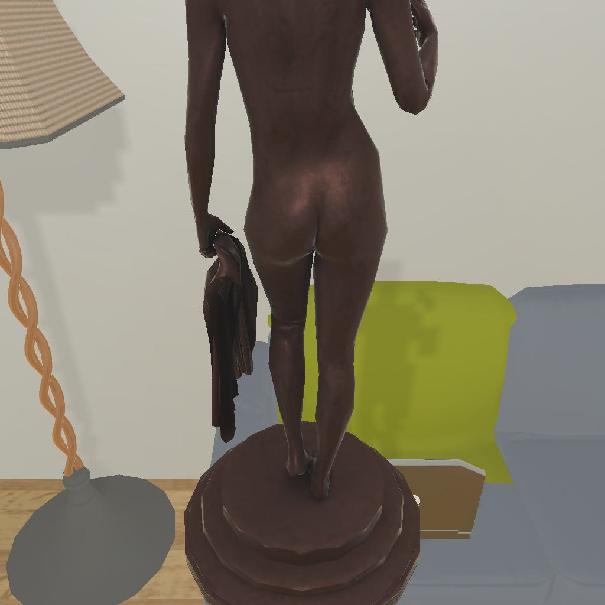

---------------------------------------------------------task: 4---------------------------------------------------------
--------------------------------------------------------------------------------------------------------------------------------------------------------------------
--------------------------------------------------------------------------------------------------------------------------------------------------------------------
Step:--------------------------------------------------------------------------9-------------------------------------------------------------------------------
----------------------------------------
VLM Prompt:
Image1:
**Instruction**
1. Analyze the provided image to identify all visible household objects, focusing on those relevant to the task description "examine the statue with the floorlamp."
2. Use the analysis of the image and the task hint "The agent must find an object of the desired type, locate and turn on a light source with the desired object in-hand." to answer the question: what is the most reasonable action in the choices for the task description "examine the statue with the floorlamp"?
4. Decide and write the answer using the template: The answer is: (i): , where i is the real number. If there is no desired object in the image, search every place based on **Initial Observation** to find the object. And if no one is exactly correct, choose a similar answer.
**Initial Observation**
You are in the middle of a room. Looking quickly around you, you can see armchair (1), coffeetable (1-2), sidetable (1), garbagecan (1), drawer (1), sofa (1), diningtable (1)
**Answer Choices**
(1): go to armchair 1
(2): go to coffeetable 1
(3): go to sidetable 1
(4): go to garbagecan 1
(5): go to drawer 1
(6): go to sofa 1
(7): go to diningtable 1
(8): put statue 1 in/on sofa 1
(9): examine statue 1
(10): examine sofa 1
**Answer**
Let's think step by step by following the instructions.
----------------------------------------
----------------------------------------
Original Response:
First, we need to identify all visible household objects in the image relevant to the task description "examine the statue with the floorlamp." The visible objects in the image are a statue and a floorlamp. The statue is the object in question, and the floorlamp is the light source mentioned in the task hint.
Based on the task hint, the agent must find the statue (which is already in the image), locate a light source (the floorlamp is visible in the image), and turn on the light source with the statue in-hand. Since the statue is likely too heavy to be held, the most reasonable action would be to turn on the floorlamp to examine the statue with the light it provides.
None of the answer choices directly mention turning on the floorlamp, but examining the statue is the closest action related to the task description. Therefore, the most reasonable action from the given choices would be:
The answer is: (9): examine statue 1.
----------------------------------------
----------------------------------------
>>> Refine Original VLM Response and Get Pure Action: examine statue 1
----------------------------------------
-----------------------------------------------------------------
Running time: 16.650312423706055 seconds
Total Money: 1.1678499999999996
-----------------------------------------------------------------
-----------------------------------------------------------------
Text Observation:This is a normal statue 1
-----------------------------------------------------------------
UNSUCCEED